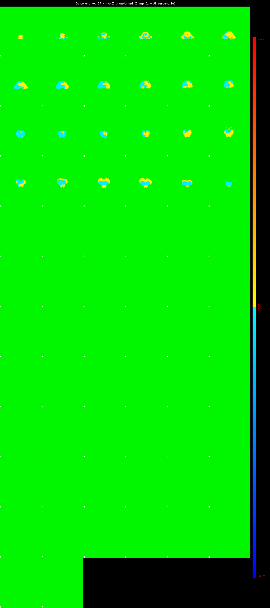
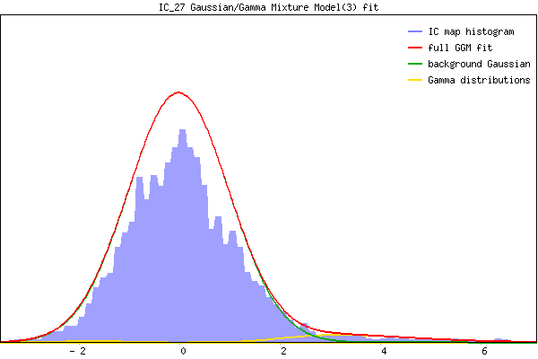

Component 27 Mixture Model fit



IC_27 Mixture Model fit
Means : -0.000000 3.741686 -1.792468
Vars : 1.000000 1.871433 0.292458
Prop. : 0.959318 0.037434 0.003248
This page produced automatically by MELODIC Version 3.10 - a part of FSL - FMRIB Software Library.